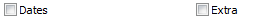

from sikuli import * import logging import myTools #---------------------------------------------------# def fTweak_Prefs(): #---------------------------------------------------# myTools.sectionStartTimeStamp("preferences") logging.debug('fTweak_Prefs') # make sure timeslips has focus myTools.getFocus() logging.debug('- open preferences') type("p",KeyModifier.ALT) type("p") time.sleep(1) # click Default button type("d",KeyModifier.ALT) type(Key.ENTER) time.sleep(1) # Interface: Startup # unmark date check type(Key.SPACE) # Interface: Appearance myTools.pressF6(3) time.sleep(1) logging.debug('- clear window settings') type("a",KeyModifier.ALT) type(Key.ENTER) time.sleep(1) # Interface: Nav Rules myTools.pressSHIFTF6(2) time.sleep(1) # Update Rates type("u",KeyModifier.ALT) time.sleep(1) # Slips: New Slip Rules if int(Settings.tsVersion) < 2014: myTools.pressF6(6) else: myTools.pressF6(8) click(Pattern().targetOffset(-118,-1)) time.sleep(1) # spelling if int(Settings.tsVersion) < 2014: myTools.pressF6(6) else: myTools.pressF6(5) type("m") type(Key.TAB) type("m") time.sleep(1) # save type("s",KeyModifier.ALT) prefsFile = Settings.tsFolder + "\\" + Settings.tsVersion + ".prf" time.sleep(1) type(prefsFile) type(Key.ENTER) # close time.sleep(1) type(Key.ENTER) myTools.sectionEndTimeStamp()